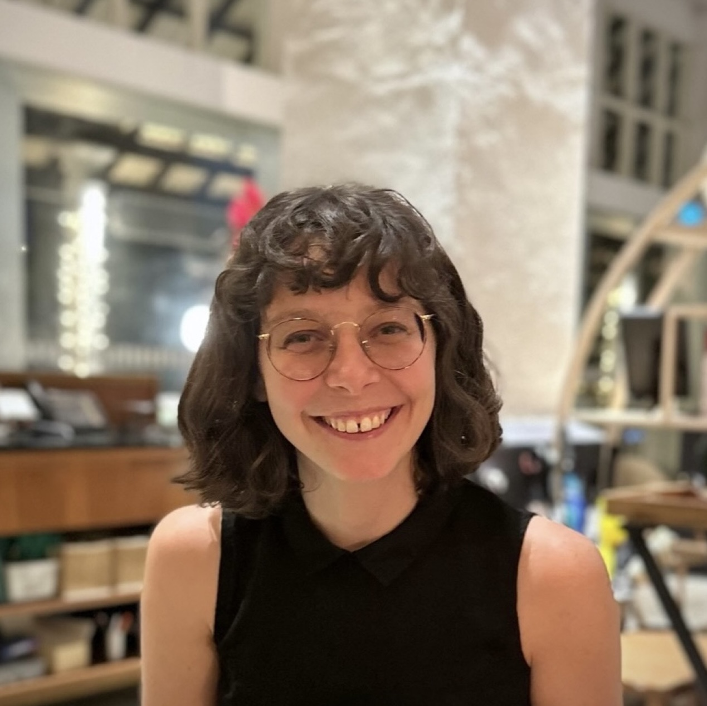
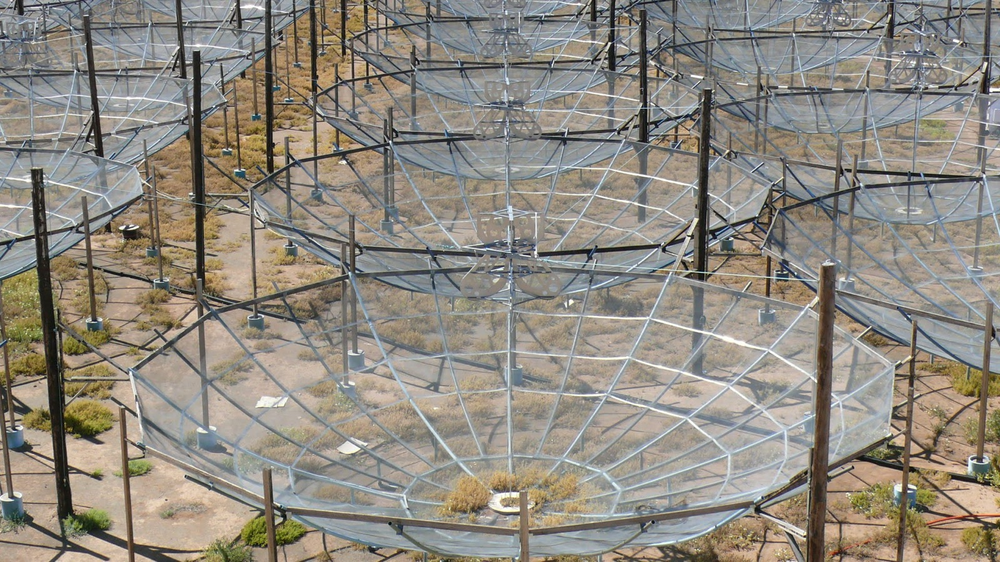
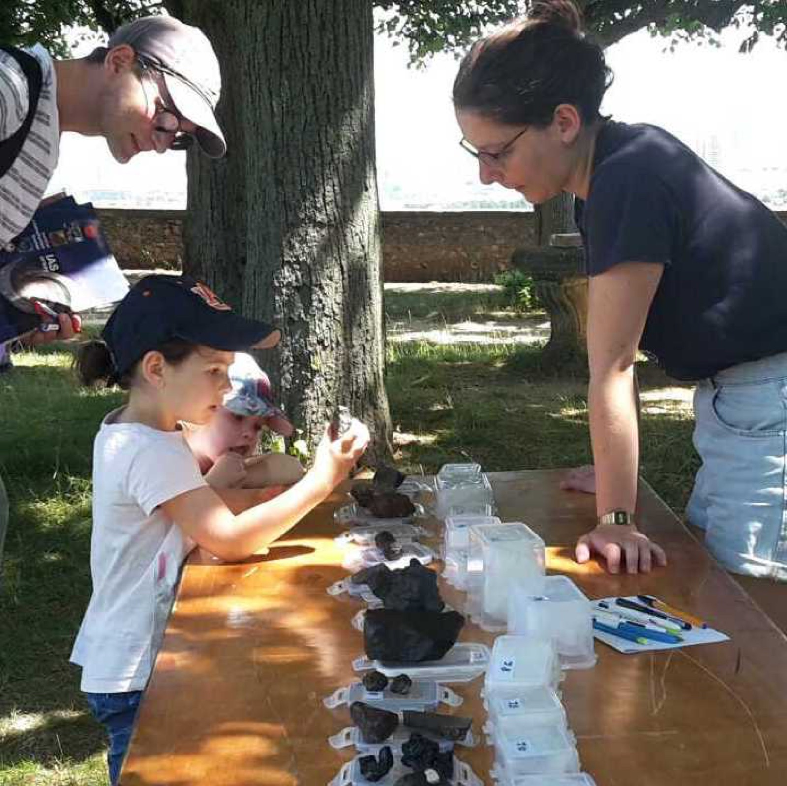

About me
Hello! I am research faculty (chargée de recherche CNRS) working in cosmology at the Institut d'Astrophysique Spatiale (IAS), at the Université Paris-Saclay, in France.
Before, I was a postdoctoral fellow at the Trottier Space Institute (TSI), McGill University. I graduated with a PhD in 2020, after three years spent between the Université Paris-Saclay, in France, and Imperial College London.
Outside of research, I love travelling around the world and bringing new recipes back to cook at home!
You can download my CV here.

Research
The core of my research consists of understanding the Epoch of Reionization, which witnessed the birth and growth of the first stars and galaxies, about 100 million years after the Big Bang. To do so, I use the largest telescopes in the world.

Image credits: Dara Storer
Outreach
I have been involved in public outreach since the very start of my career, as I consider that sharing our knowledge and research is an essential aspect of the job of a researcher.

Get in touch
Feel free to drop me an email about cosmology, outreach, job opportunities, or anything else!